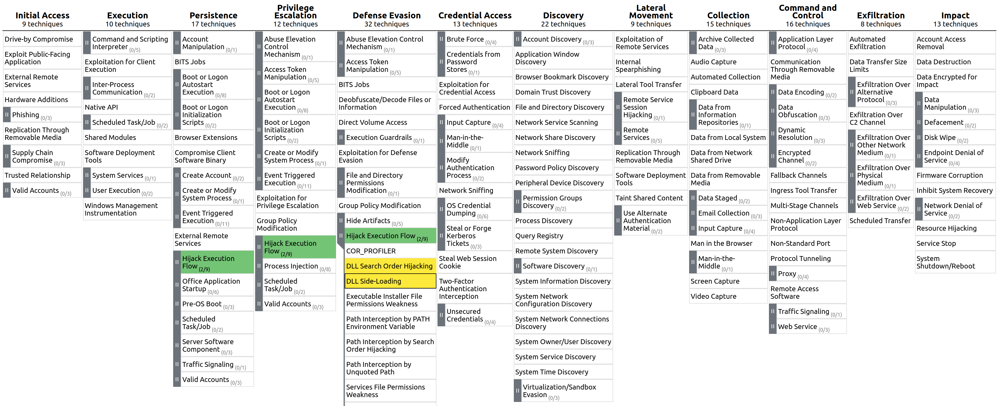
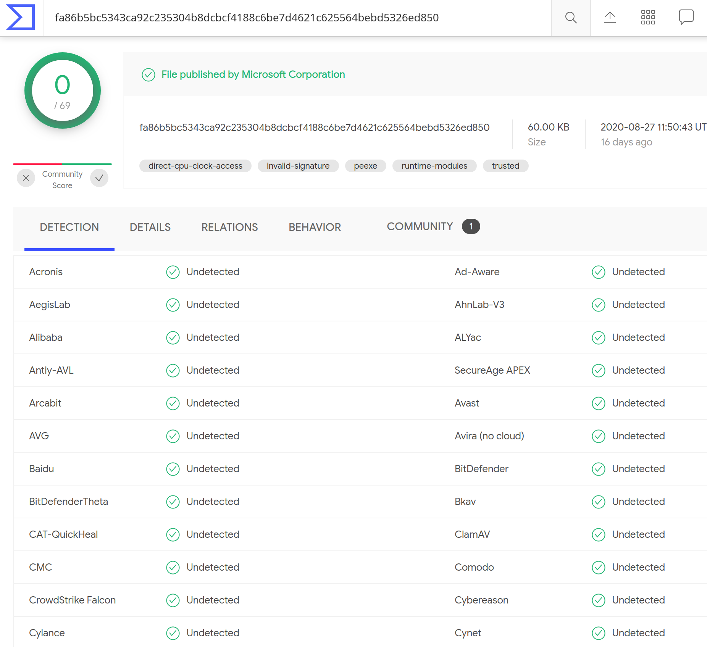

Hijacking DLLs in Windows
October 2020
![PwC Logo]()
October 2020
Keep in touch:
“Tricking a legitimate/trusted application into loading an arbitrary DLL”

| Type | Method |
|---|---|
| 1: DLL replacement | Replace a legitimate DLL with the evil DLL. |
| 2: DLL search order hijacking | Place the evil DLL in a location that is ched for before the legitimate DLL. |
| 3: Phantom DLL Hijacking | Drop the evil DLL in place of a missing/existing DLL that a legitimate application tries to load. |
| 4: DLL redirection | Change the location in which the DLL is searched for, by editing the %PATH% environment variable or .exe.manifest / .exe.local. |
| 5: WinSxS DLL replacement (‘DLL side-loading’) | Replace the legitimate with the evil DLL in the relevant WinSxS folder of the targeted DLL. |
| 6: Relative path DLL Hijacking | Copy (and optionally rename) the legitimate application to a user-writeable folder, alongside the evil DLL. |
“Replace a legitimate DLL with the evil DLL.”
Stuxnet: renamed legitimate Siemens DLL S7OTBXDX.DLL in c:\windows\ and added its own malicious version, implementing all exports but with modified logic when interacting with the PLC [2]. Execution + Persistence!

“Place the evil DLL in a location that is searched for before the legitimate DLL.”
%PATH%FILE NOT FOUND in ProcmonVault7 Leaks: portable Chrome tries to load DWrite.dll, located in System32\. Because no absolute path is specified, the directory of the application is tried first [3]. Execution (+ Persistence)!
“Drop the evil DLL in place of a missing/non-existing DLL that a legitimate application tries to load.”
Vault7 leaks: Kaspersky process avp.exe intended to load WHEAPGRD.DLL. Due to a bug, it would prepend the drive letter, meaning it would try to load non-existing file CWHEAPGRD.DLL [4]. Execution + Persistence (+ Elevation?)
“Change the location in which the DLL is searched for, by editing %PATH% or .exe.manifest / .exe.local.”
“Replace the legitimate with the evil DLL in the relevant WinSxS folder of the targeted DLL.”
“Copy (and optionally rename) the legitimate application to a user-writeable folder, alongside the evil DLL.”
PwC Threat Intelligence observed a dropper (‘xStart’) used by a threat actor targetting Chinese organisations to deliver Cobalt Strike payloads. Through phishing, a user is tricked into opening a legitimate (but renamed) winword.exe that is put alongside a malicious alongside a malicious wwlib.dll. When the renamed winword.exe is executed, wwlib.dll is triggered, starting phase 2 of the attack [6]. Execution!

“Copy (and optionally rename) the legitimate application to a user-writeable folder, alongside the evil DLL.”
Nearly 300 (!) system32\ executables are vulnerable to this [7]
Many, many more outside this dir, as well as non-Microsoft (see Hexacorn et al.)
Can be combined with UAC bypass techniques

“Copy (and optionally rename) the legitimate application to a user-writeable folder, alongside the evil DLL.”
This poses a problem:
So how to prevent / detect this?
| üîß Developers | üë©‚Äçüíª ü뮂Äçüíª System admins |
|---|---|
| Use absolute DLL paths where possible e.g.  system32\ DLLs, environment variables if needed |
Use PreferSystem32Images and MicrosoftSignedOnly /StoreSignedOnly process mitigations? [8] |
| Verify validity of DLL i.e. check expected signature |
A few (flawed) ideas:

üîé Instead of just looking for the DLL Hijacking, look for the behaviour that follows
üìö Layer your defences!
üõ°Ô∏è Ensure a broad base of behavioural rules, hunting techniques, anomaly detection